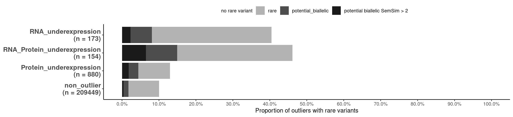

# Load plotting config and functions
source(snakemake@input$config)
source("src/functions/Integration/integrate_annotate_omics.R")
source("src/functions/variant_enrichment.R")
# Read integrated omics file
# rp <- readRDS("/s/project/mitoMultiOmics/multiOMICs_integration/processed_data/integration/patient_omics_full.RDS") %>% as.data.table()
rp <- readRDS(snakemake@input$patient_omics) %>% as.data.table()
# Subset cases with WES and RNA-seq data avaliable
rp <- rp[WES_avaliable == T & RNA_seq_avaliable == T]
paste("Number of samples with WES export and RNA-seq avaliable:", uniqueN(rp$SAMPLE_ID))
## [1] "Number of samples with WES export and RNA-seq avaliable: 140"
#Keep only genes, with both RNA and protein measured
rp <- rp[ gene_detected == "RNA and protein detected"]
# Filter for the genes, detected as outliers at least once
outliers <- unique(rp[outlier_class != "non_outlier"]$geneID)
rp <- rp[geneID %in% outliers]
# Add up- down- outlier class
rp <- add_up_down_class(rp,
Padj_threshold = PADJ_THRESHOLD,
Zscore_threshold = ZSCORE_THRESHOLD,
l2FC_threshold = LOG2FC_THRESHOLD)
# Add phenotype semantic simillarity class
rp[, ss_cat:= Semantic_sim > 2]
rp[is.na(ss_cat), ss_cat := F]
# Add variant type annotation
rp[ , var_type := "no rare variant"]
rp[ rare == T , var_type := "rare"]
rp[ potential_biallelic == T , var_type := "potential_biallelic"]
rp[potential_biallelic == T & ss_cat == T, var_type:= "potential biallelic SemSim > 2"]
# Subset necessary columns
rp <- rp[ , c("SAMPLE_ID", "geneID", "var_type", "up_down_outlier") ]
# Calculate proportions of outliers
pr <- rp[, .N, by = .(up_down_outlier, var_type)]
pr[, total := sum(N), by = .(up_down_outlier)]
pr[, prop := N/sum(N), by = up_down_outlier]
pr[, type := "pb"]
# write_tsv(pr, "/s/project/mitoMultiOmics/multiOMICs_integration/processed_data/variant_tables/proportions_rare_biallelic.tsv")
write_tsv(pr, snakemake@output$proportions_rare_pb)
pr[, var_type := factor(var_type, levels = c("no rare variant", "rare", "potential_biallelic", "potential biallelic SemSim > 2"))]
pr[, outlier_class_label := paste0(up_down_outlier ,'\n', "(n = ", total, ")") ]
Underexpression outliers
Performed on the not representative subset of the data, to illutrate the analysis
pr <- pr[up_down_outlier %in% c("RNA_underexpression", "Protein_underexpression", "RNA_Protein_underexpression", "non_outlier")]
ggplot(pr, aes(outlier_class_label, prop)) +
geom_bar(stat= 'identity', aes(fill = var_type)) +
scale_fill_manual(values = variant_colors2 ) +
coord_flip(ylim = c(0,1)) +
scale_y_continuous(breaks=seq(0,1, 0.1), labels=scales::percent) +
labs( y = "Proportion of outliers with rare variants")+
theme_classic()+
theme(legend.position="top", axis.title.y = element_blank() ,legend.direction = "horizontal",
legend.title = element_blank(),
axis.text.y = element_text(face="bold", size=12)) +
guides(fill = guide_legend(nrow = 1))

IyctLS0KIycgdGl0bGU6IFByb3BvcnRpb24gb2Ygb3V0bGllcnMgd2l0aCB2YXJpYW50cyBhbmQgcGhlbm90eXBlIHNpbW1pbGFyaXR5CiMnIGF1dGhvcjogc21pcm5vdmQKIycgd2I6CiMnICBpbnB1dDoKIycgIC0gY29uZmlnOiAnc3JjL2NvbmZpZy5SJwojJyAgLSBwYXRpZW50X29taWNzOiAnYHNtIGNvbmZpZ1siUFJPQ19EQVRBIl0gKyAiL2ludGVncmF0aW9uL3BhdGllbnRfb21pY3NfZnVsbC5SRFMiYCcKIycgIG91dHB1dDoKIycgIC0gcHJvcG9ydGlvbnNfcmFyZV9wYjogJ2BzbSBjb25maWdbIlBST0NfREFUQSJdICsgIi92YXJpYW50X3RhYmxlcy9wcm9wb3J0aW9uc19yYXJlX2JpYWxsZWxpYy50c3YiYCcKIycgb3V0cHV0OiAKIycgICBodG1sX2RvY3VtZW50OgojJyAgICBjb2RlX2ZvbGRpbmc6IGhpZGUKIycgICAgY29kZV9kb3dubG9hZDogVFJVRQojJy0tLQoKIyBMb2FkIHBsb3R0aW5nIGNvbmZpZyBhbmQgZnVuY3Rpb25zCnNvdXJjZShzbmFrZW1ha2VAaW5wdXQkY29uZmlnKQpzb3VyY2UoInNyYy9mdW5jdGlvbnMvSW50ZWdyYXRpb24vaW50ZWdyYXRlX2Fubm90YXRlX29taWNzLlIiKQpzb3VyY2UoInNyYy9mdW5jdGlvbnMvdmFyaWFudF9lbnJpY2htZW50LlIiKQoKCiMgUmVhZCBpbnRlZ3JhdGVkIG9taWNzIGZpbGUgCiMgcnAgPC0gcmVhZFJEUygiL3MvcHJvamVjdC9taXRvTXVsdGlPbWljcy9tdWx0aU9NSUNzX2ludGVncmF0aW9uL3Byb2Nlc3NlZF9kYXRhL2ludGVncmF0aW9uL3BhdGllbnRfb21pY3NfZnVsbC5SRFMiKSAlPiUgYXMuZGF0YS50YWJsZSgpCnJwIDwtIHJlYWRSRFMoc25ha2VtYWtlQGlucHV0JHBhdGllbnRfb21pY3MpICU+JSBhcy5kYXRhLnRhYmxlKCkKCiMgU3Vic2V0IGNhc2VzIHdpdGggV0VTIGFuZCBSTkEtc2VxIGRhdGEgYXZhbGlhYmxlIApycCA8LSBycFtXRVNfYXZhbGlhYmxlID09IFQgJiBSTkFfc2VxX2F2YWxpYWJsZSA9PSBUXQpwYXN0ZSgiTnVtYmVyIG9mIHNhbXBsZXMgd2l0aCBXRVMgZXhwb3J0IGFuZCBSTkEtc2VxIGF2YWxpYWJsZToiLCB1bmlxdWVOKHJwJFNBTVBMRV9JRCkpCgoKI0tlZXAgb25seSBnZW5lcywgd2l0aCBib3RoIFJOQSBhbmQgcHJvdGVpbiBtZWFzdXJlZCAKcnAgPC0gcnBbIGdlbmVfZGV0ZWN0ZWQgPT0gIlJOQSBhbmQgcHJvdGVpbiBkZXRlY3RlZCJdCgojIEZpbHRlciBmb3IgdGhlIGdlbmVzLCBkZXRlY3RlZCBhcyBvdXRsaWVycyBhdCBsZWFzdCBvbmNlCm91dGxpZXJzIDwtIHVuaXF1ZShycFtvdXRsaWVyX2NsYXNzICE9ICJub25fb3V0bGllciJdJGdlbmVJRCkKcnAgPC0gcnBbZ2VuZUlEICVpbiUgb3V0bGllcnNdCgoKIyBBZGQgdXAtIGRvd24tIG91dGxpZXIgY2xhc3MKcnAgPC0gYWRkX3VwX2Rvd25fY2xhc3MocnAsIAogICAgICAgICAgICAgICAgICAgICAgICBQYWRqX3RocmVzaG9sZCA9ICBQQURKX1RIUkVTSE9MRCwKICAgICAgICAgICAgICAgICAgICAgICAgWnNjb3JlX3RocmVzaG9sZCA9IFpTQ09SRV9USFJFU0hPTEQsIAogICAgICAgICAgICAgICAgICAgICAgICBsMkZDX3RocmVzaG9sZCA9IExPRzJGQ19USFJFU0hPTEQpCgoKIyBBZGQgcGhlbm90eXBlIHNlbWFudGljIHNpbWlsbGFyaXR5IGNsYXNzCnJwWywgc3NfY2F0Oj0gU2VtYW50aWNfc2ltID4gMl0KcnBbaXMubmEoc3NfY2F0KSwgc3NfY2F0IDo9IEZdCgoKIyBBZGQgdmFyaWFudCB0eXBlIGFubm90YXRpb24KcnBbICwgdmFyX3R5cGUgOj0gIm5vIHJhcmUgdmFyaWFudCJdIApycFsgcmFyZSA9PSBUICwgdmFyX3R5cGUgOj0gInJhcmUiXSAKcnBbIHBvdGVudGlhbF9iaWFsbGVsaWMgPT0gVCAsIHZhcl90eXBlIDo9ICJwb3RlbnRpYWxfYmlhbGxlbGljIl0gCnJwW3BvdGVudGlhbF9iaWFsbGVsaWMgPT0gVCAmIHNzX2NhdCA9PSBULCAgdmFyX3R5cGU6PSAicG90ZW50aWFsIGJpYWxsZWxpYyBTZW1TaW0gPiAyIl0KCiMgU3Vic2V0IG5lY2Vzc2FyeSBjb2x1bW5zCnJwIDwtIHJwWyAsIGMoIlNBTVBMRV9JRCIsICJnZW5lSUQiLCAidmFyX3R5cGUiLCAidXBfZG93bl9vdXRsaWVyIikgXQoKCiMgQ2FsY3VsYXRlIHByb3BvcnRpb25zIG9mIG91dGxpZXJzCnByIDwtIHJwWywgLk4sIGJ5ID0gLih1cF9kb3duX291dGxpZXIsIHZhcl90eXBlKV0KcHJbLCB0b3RhbCA6PSBzdW0oTiksIGJ5ID0gLih1cF9kb3duX291dGxpZXIpXQpwclssIHByb3AgOj0gTi9zdW0oTiksIGJ5ID0gdXBfZG93bl9vdXRsaWVyXQpwclssIHR5cGUgOj0gInBiIl0KCiMgd3JpdGVfdHN2KHByLCAiL3MvcHJvamVjdC9taXRvTXVsdGlPbWljcy9tdWx0aU9NSUNzX2ludGVncmF0aW9uL3Byb2Nlc3NlZF9kYXRhL3ZhcmlhbnRfdGFibGVzL3Byb3BvcnRpb25zX3JhcmVfYmlhbGxlbGljLnRzdiIpCndyaXRlX3Rzdihwciwgc25ha2VtYWtlQG91dHB1dCRwcm9wb3J0aW9uc19yYXJlX3BiKQoKcHJbLCB2YXJfdHlwZSA6PSBmYWN0b3IodmFyX3R5cGUsIGxldmVscyA9IGMoIm5vIHJhcmUgdmFyaWFudCIsICJyYXJlIiwgInBvdGVudGlhbF9iaWFsbGVsaWMiLCAicG90ZW50aWFsIGJpYWxsZWxpYyBTZW1TaW0gPiAyIikpXQpwclssIG91dGxpZXJfY2xhc3NfbGFiZWwgOj0gcGFzdGUwKHVwX2Rvd25fb3V0bGllciAsJ1xuJywgIihuID0gIiwgdG90YWwsICIpIikgXQoKCiMnICMjIyBVbmRlcmV4cHJlc3Npb24gb3V0bGllcnMgCiMnIFBlcmZvcm1lZCBvbiB0aGUgbm90IHJlcHJlc2VudGF0aXZlIHN1YnNldCBvZiB0aGUgZGF0YSwgdG8gaWxsdXRyYXRlIHRoZSBhbmFseXNpcyAKcHIgPC0gcHJbdXBfZG93bl9vdXRsaWVyICVpbiUgYygiUk5BX3VuZGVyZXhwcmVzc2lvbiIsICJQcm90ZWluX3VuZGVyZXhwcmVzc2lvbiIsICJSTkFfUHJvdGVpbl91bmRlcmV4cHJlc3Npb24iLCAibm9uX291dGxpZXIiKV0KCiMrIGZpZy53aWR0aD0xMywgZmlnLmhlaWdodD0zCmdncGxvdChwciwgYWVzKG91dGxpZXJfY2xhc3NfbGFiZWwsIHByb3ApKSArCiAgZ2VvbV9iYXIoc3RhdD0gJ2lkZW50aXR5JywgYWVzKGZpbGwgPSB2YXJfdHlwZSkpICsKICBzY2FsZV9maWxsX21hbnVhbCh2YWx1ZXMgPSB2YXJpYW50X2NvbG9yczIgKSArCiAgY29vcmRfZmxpcCh5bGltID0gYygwLDEpKSArCiAgc2NhbGVfeV9jb250aW51b3VzKGJyZWFrcz1zZXEoMCwxLCAwLjEpLCBsYWJlbHM9c2NhbGVzOjpwZXJjZW50KSArCiAgbGFicyggeSA9ICJQcm9wb3J0aW9uIG9mIG91dGxpZXJzIHdpdGggcmFyZSB2YXJpYW50cyIpKwogIHRoZW1lX2NsYXNzaWMoKSsKICB0aGVtZShsZWdlbmQucG9zaXRpb249InRvcCIsICBheGlzLnRpdGxlLnkgPSBlbGVtZW50X2JsYW5rKCkgLGxlZ2VuZC5kaXJlY3Rpb24gPSAiaG9yaXpvbnRhbCIsCiAgICAgICAgbGVnZW5kLnRpdGxlID0gZWxlbWVudF9ibGFuaygpLAogICAgICAgIGF4aXMudGV4dC55ID0gZWxlbWVudF90ZXh0KGZhY2U9ImJvbGQiLCBzaXplPTEyKSkgKwogIGd1aWRlcyhmaWxsID0gZ3VpZGVfbGVnZW5kKG5yb3cgPSAxKSkKCg==